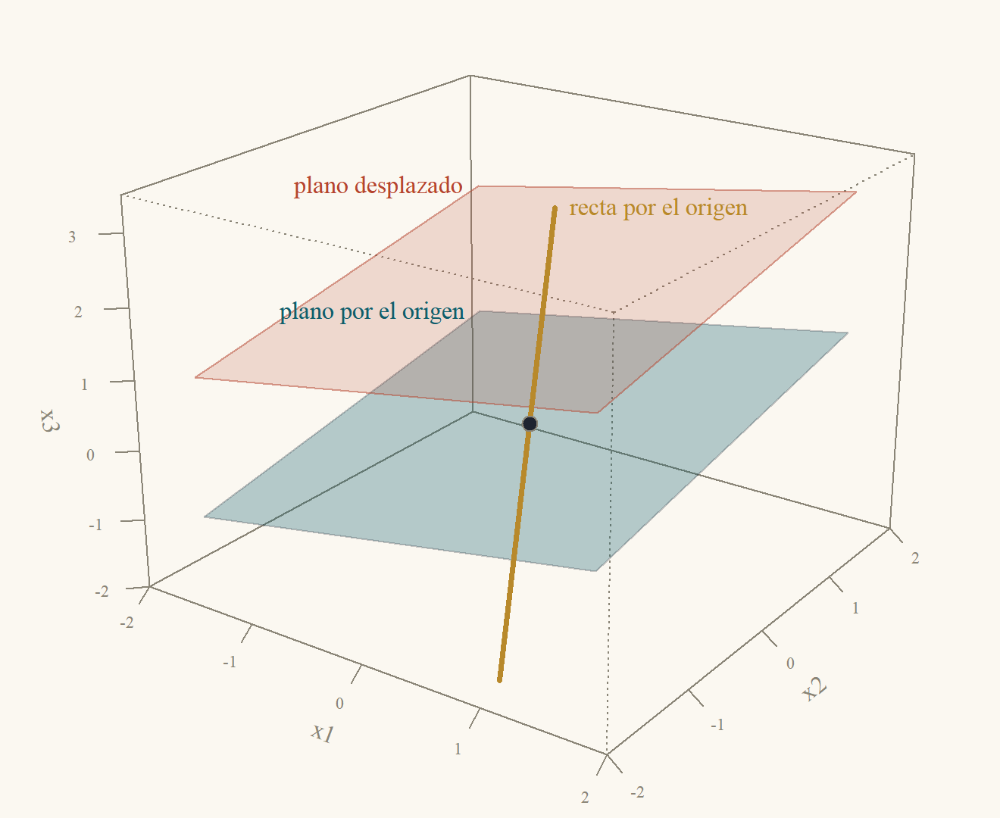
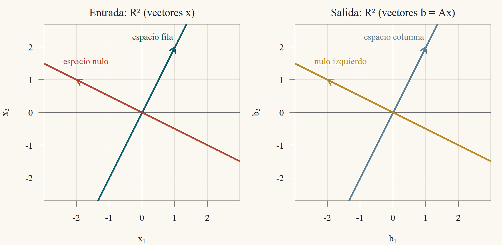
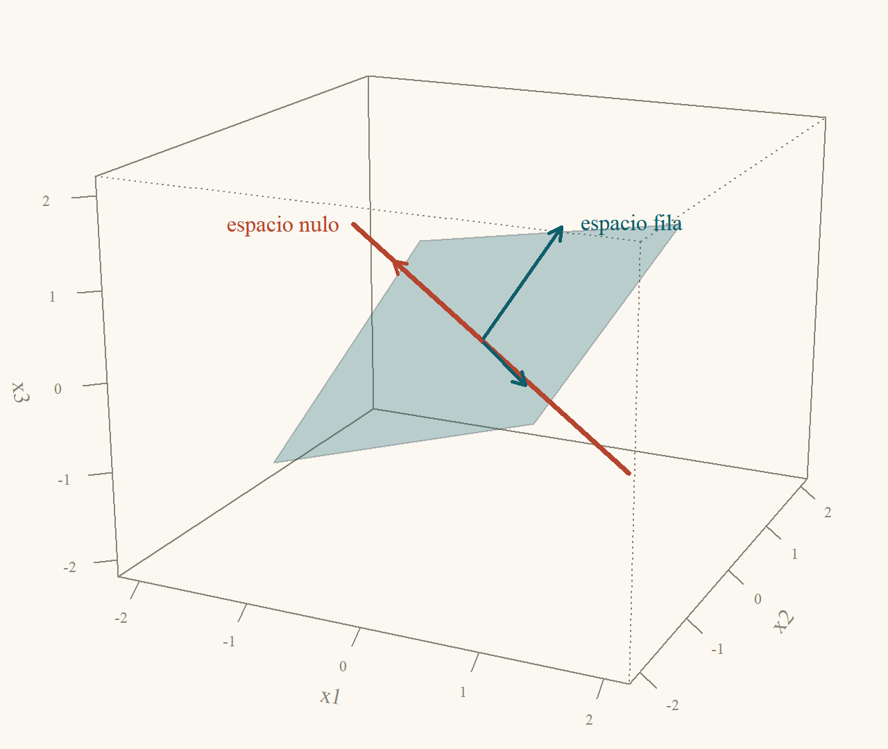
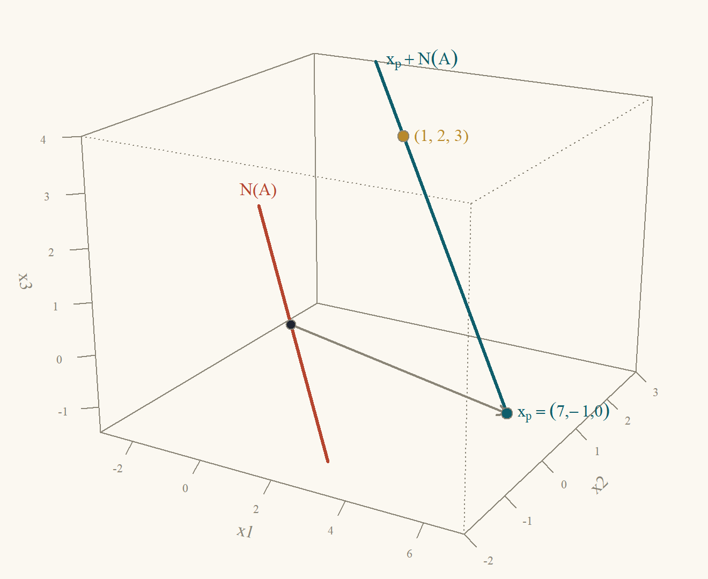
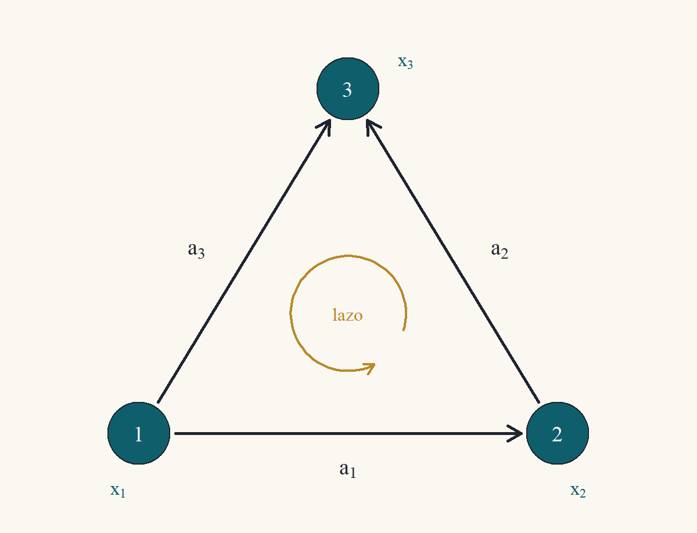

Clase 3 · Los cuatro subespacios fundamentales
Qué salidas son posibles y qué entradas se pierden
1 Dos preguntas sobre una matriz
La Clase 1 resolvió sistemas uno a la vez. Esta clase mira la matriz \(A\) completa y hace dos preguntas que no dependen de un \(b\) particular:
- ¿Qué salidas puede producir \(A\)? Es decir, ¿para qué vectores \(b\) tiene solución \(Ax = b\)?
- ¿Qué entradas se pierden? Es decir, ¿qué vectores \(x\) produce la salida cero, \(Ax = 0\)? Si hay alguno distinto de cero, \(A\) “no distingue” entre \(x\) y \(x\) más ese vector, y las soluciones de \(Ax = b\) (cuando existen) no son únicas.
Las respuestas son dos subespacios: el espacio columna y el espacio nulo. Con la transpuesta \(A'\) aparecen otros dos, y los cuatro juntos describen todo lo que una matriz hace. Antes de definirlos necesitamos un poco de vocabulario: subespacio, independencia, base y dimensión. Todo se ilustra en el plano y el espacio, donde los subespacios son rectas y planos que pasan por el origen.
2 Subespacios
Definición 1 (Subespacio) Un conjunto \(V\) de vectores de \(\mathbb{R}^n\) es un subespacio si:
- contiene al vector cero: \(0\in V\);
- es cerrado bajo la suma: si \(u,v\in V\), entonces \(u + v\in V\);
- es cerrado bajo la multiplicación por números: si \(v\in V\) y \(c\in\mathbb{R}\), entonces \(cv\in V\).
Las condiciones 2 y 3 dicen que no se puede salir de \(V\) haciendo combinaciones lineales de vectores de \(V\). En el espacio, los subespacios son: el origen solo, las rectas que pasan por el origen, los planos que pasan por el origen y \(\mathbb{R}^3\) entero (lo probaremos al final de la sección de dimensión). Un plano que no pasa por el origen no es un subespacio: no contiene al cero, y la suma de dos de sus puntos se sale de él (Figura 1).

Ejemplo 1 (Qué es y qué no es subespacio)
- \(V = \{(x_1,x_2): x_2 = 2x_1\}\) (la recta \(x_2 = 2x_1\) del plano) es un subespacio. Contiene a \((0,0)\) porque \(0 = 2\cdot0\). Si \((x_1,2x_1)\) y \((y_1,2y_1)\) están en \(V\), su suma \((x_1 + y_1,\ 2x_1 + 2y_1) = (x_1 + y_1,\ 2(x_1 + y_1))\) también, y \(c(x_1,2x_1) = (cx_1,\ 2(cx_1))\) también.
- \(W = \{(x_1,x_2): x_2 = 2x_1 + 1\}\) no es subespacio: \((0,0)\notin W\), porque \(0\ne2\cdot0 + 1\).
- \(P = \{(x_1,x_2,x_3): x_1 + x_2 + x_3 = 0\}\) es un subespacio de \(\mathbb{R}^3\) (un plano por el origen). Si \(x\) y \(y\) cumplen la ecuación, \((x_1 + y_1) + (x_2 + y_2) + (x_3 + y_3) = (x_1 + x_2 + x_3) + (y_1 + y_2 + y_3) = 0 + 0 = 0\), y \(cx_1 + cx_2 + cx_3 = c(x_1 + x_2 + x_3) = c\cdot0 = 0\).
- \(Q = \{(x_1,x_2): x_1\ge0\}\) (un semiplano) no es subespacio: \((1,0)\in Q\) pero \((-1)(1,0) = (-1,0)\notin Q\).
2.1 El espacio generado
La forma más común de fabricar un subespacio es tomar todas las combinaciones de unos vectores dados.
Definición 2 (Espacio generado) El espacio generado por los vectores \(v_1,\dots,v_k\) de \(\mathbb{R}^n\) es el conjunto de todas sus combinaciones lineales: \[ \operatorname{gen}\{v_1,\dots,v_k\} = \{c_1v_1 + c_2v_2 + \dots + c_kv_k:\ c_1,\dots,c_k\in\mathbb{R}\}. \]
Proposición 1 (El espacio generado es un subespacio) Para todos \(v_1,\dots,v_k\in\mathbb{R}^n\), \(\operatorname{gen}\{v_1,\dots,v_k\}\) es un subespacio de \(\mathbb{R}^n\).
Demostración. Verificamos las tres condiciones de la Definición 1.
1. Contiene al cero. Tomando \(c_1 = \dots = c_k = 0\): \(0v_1 + \dots + 0v_k = 0\).
2. Suma. Si \(u = \sum_ic_iv_i\) y \(w = \sum_id_iv_i\) son dos combinaciones, \(u + w = \sum_i(c_i + d_i)v_i\), que es otra combinación (con coeficientes \(c_i + d_i\)).
3. Múltiplos. Si \(u = \sum_ic_iv_i\) y \(a\) es un número, \(au = \sum_i(ac_i)v_i\), otra combinación.
En \(\mathbb{R}^3\): el espacio generado por un vector \(v\ne0\) es la recta por el origen en la dirección de \(v\); el generado por dos vectores no paralelos es el plano por el origen que los contiene; y el generado por tres vectores que no están en un mismo plano es todo \(\mathbb{R}^3\). Cuando los vectores son “redundantes”, el espacio generado es menor de lo que uno esperaría: eso es la dependencia lineal.
3 Independencia lineal
Definición 3 (Independencia lineal) Los vectores \(v_1,\dots,v_k\) son linealmente independientes si la única combinación que da cero es la trivial: \[ c_1v_1 + \dots + c_kv_k = 0\quad\Longrightarrow\quad c_1 = c_2 = \dots = c_k = 0. \] Si existe una combinación igual a cero con algún \(c_i\ne0\), son linealmente dependientes.
Proposición 2 (Dependencia significa que uno sobra) Los vectores \(v_1,\dots,v_k\) (\(k\ge2\)) son linealmente dependientes si y solo si alguno de ellos es combinación lineal de los demás.
Demostración. (\(\Rightarrow\)) Sea \(c_1v_1 + \dots + c_kv_k = 0\) con algún coeficiente distinto de cero, digamos \(c_j\ne0\). Despejamos \(v_j\): pasamos los demás términos al otro lado y dividimos por \(c_j\), \[ v_j = -\frac{c_1}{c_j}v_1 - \dots - \frac{c_{j-1}}{c_j}v_{j-1} - \frac{c_{j+1}}{c_j}v_{j+1} - \dots - \frac{c_k}{c_j}v_k, \] que es una combinación de los demás.
(\(\Leftarrow\)) Si \(v_j = \sum_{i\ne j}d_iv_i\), entonces \(\sum_{i\ne j}d_iv_i + (-1)v_j = 0\) es una combinación igual a cero con el coeficiente de \(v_j\) igual a \(-1\ne0\): son dependientes.
En el plano, dos vectores son dependientes exactamente cuando están sobre una misma recta por el origen (uno es múltiplo del otro); en el espacio, tres vectores son dependientes cuando están en un mismo plano por el origen. La prueba práctica es la eliminación:
Proposición 3 (Independencia y pivotes) Sea \(A\) la matriz \(n\times k\) cuyas columnas son \(v_1,\dots,v_k\). Son equivalentes:
- \(v_1,\dots,v_k\) son linealmente independientes;
- \(Ax = 0\) solo tiene la solución \(x = 0\);
- una forma escalonada de \(A\) tiene un pivote en cada columna (no hay variables libres).
Demostración. (1 \(\Leftrightarrow\) 2). Por la lectura por columnas de la Clase 1, \(Ax = x_1v_1 + \dots + x_kv_k\). Entonces “\(Ax = 0\) solo para \(x = 0\)” dice exactamente que la única combinación de las \(v_i\) igual a cero es la trivial: es la Definición 3.
(2 \(\Leftrightarrow\) 3). El sistema homogéneo \(Ax = 0\) siempre tiene solución (\(x = 0\)). Por el teorema de existencia y unicidad de la Clase 1, la solución es única si y solo si no hay variables libres, es decir, si cada columna tiene un pivote.
Corolario 1 (Demasiados vectores son dependientes) En \(\mathbb{R}^n\), cualquier conjunto de más de \(n\) vectores es linealmente dependiente.
Demostración. Con \(k>n\) vectores, la matriz \(A\) es \(n\times k\). Una forma escalonada tiene a lo más un pivote por fila, es decir, a lo más \(n\) pivotes, y hay \(k>n\) columnas: alguna columna no tiene pivote. Por la Proposición 3, los vectores son dependientes.
Ejemplo 2 (Tres vectores en el espacio) Independientes: \(v_1 = (1,0,1)'\), \(v_2 = (1,1,0)'\), \(v_3 = (0,1,1)'\). Con ellos como columnas, \[ \begin{pmatrix}1&1&0\\0&1&1\\1&0&1\end{pmatrix}\xrightarrow{F_3\leftarrow F_3 - F_1}\begin{pmatrix}1&1&0\\0&1&1\\0&-1&1\end{pmatrix}\xrightarrow{F_3\leftarrow F_3 + F_2}\begin{pmatrix}1&1&0\\0&1&1\\0&0&2\end{pmatrix}. \] Tres pivotes (\(1\), \(1\), \(2\)): son independientes, y por lo tanto no están en un mismo plano.
Dependientes: \(v_1 = (1,0,1)'\), \(v_2 = (1,1,0)'\), \(w = (2,1,1)'\). Aquí \(w = v_1 + v_2\) (en efecto, \((1 + 1,\ 0 + 1,\ 1 + 0) = (2,1,1)\)), así que \(v_1 + v_2 - w = 0\) es una combinación no trivial igual a cero. Los tres están en el plano generado por \(v_1\) y \(v_2\).
4 Base y dimensión
Definición 4 (Base) Una base de un subespacio \(V\) es un conjunto de vectores de \(V\) que (i) son linealmente independientes y (ii) generan \(V\).
Una base es un sistema de coordenadas: todo vector de \(V\) se escribe como combinación de la base (porque la base genera \(V\)) de una única manera (porque es independiente: si \(v = \sum c_iv_i = \sum d_iv_i\), entonces \(\sum(c_i - d_i)v_i = 0\) y, por independencia, \(c_i = d_i\)). La base canónica de \(\mathbb{R}^3\) es \(e_1 = (1,0,0)'\), \(e_2 = (0,1,0)'\), \(e_3 = (0,0,1)'\), pero hay infinitas otras: por el Ejemplo 2, \((1,0,1)'\), \((1,1,0)'\), \((0,1,1)'\) también lo es (son independientes, y en la próxima proposición veremos que tres vectores independientes de \(\mathbb{R}^3\) siempre generan \(\mathbb{R}^3\)).
Lo notable es que todas las bases de un subespacio tienen el mismo número de vectores. Eso permite definir la dimensión. La herramienta es el siguiente lema.
Lema 1 (Más vectores que generadores implica dependencia) Si \(w_1,\dots,w_\ell\) están en \(\operatorname{gen}\{v_1,\dots,v_k\}\) y \(\ell>k\), entonces \(w_1,\dots,w_\ell\) son linealmente dependientes.
Cada \(w_j\) es una combinación de las \(v_i\); guardo esos coeficientes en una matriz \(C\) de \(k\times\ell\): \(w_j = \sum_ic_{ij}v_i\). Con \(V = (v_1\cdots v_k)\) y \(W = (w_1\cdots w_\ell)\), eso es \(W = VC\). Ahora, \(C\) tiene más columnas (\(\ell\)) que filas (\(k\)): por la Clase 1, \(Cx = 0\) tiene una solución \(x\ne0\). Y entonces \(Wx = VCx = V0 = 0\): una combinación no trivial de las \(w_j\) da cero.
Demostración. Paso 1. Para cada \(j = 1,\dots,\ell\), como \(w_j\in\operatorname{gen}\{v_1,\dots,v_k\}\), existen números \(c_{1j},\dots,c_{kj}\) con \(w_j = c_{1j}v_1 + \dots + c_{kj}v_k\). Sea \(C\) la matriz \(k\times\ell\) con esas entradas, \(V\) la matriz \(n\times k\) con columnas \(v_i\), y \(W\) la matriz \(n\times\ell\) con columnas \(w_j\). Por la lectura por columnas, la columna \(j\) de \(VC\) es \(V\) por la columna \(j\) de \(C\), es decir \(\sum_ic_{ij}v_i = w_j\). Entonces \(W = VC\).
Paso 2. El sistema homogéneo \(Cx = 0\) tiene \(k\) ecuaciones y \(\ell>k\) incógnitas. Por el Corolario 1 (aplicado a las \(\ell\) columnas de \(C\), que son vectores de \(\mathbb{R}^k\)), las columnas de \(C\) son dependientes: existe \(x\ne0\) con \(Cx = 0\).
Paso 3. Con ese \(x\), por asociatividad, \(Wx = (VC)x = V(Cx) = V0 = 0\). Por la lectura por columnas, \(Wx = x_1w_1 + \dots + x_\ell w_\ell = 0\) con \(x\ne0\): los \(w_j\) son dependientes.
Teorema 1 (Todas las bases tienen el mismo tamaño) Si \(v_1,\dots,v_k\) y \(w_1,\dots,w_\ell\) son dos bases del mismo subespacio \(V\), entonces \(k = \ell\).
Demostración. Como \(v_1,\dots,v_k\) genera \(V\), todos los \(w_j\) están en \(\operatorname{gen}\{v_1,\dots,v_k\}\). Si fuera \(\ell>k\), por el Lema 1 los \(w_j\) serían dependientes, lo que contradice que son base. Luego \(\ell\le k\). Intercambiando los papeles de las dos bases (los \(v_i\) están en el espacio generado por los \(w_j\)), \(k\le\ell\). Entonces \(k = \ell\).
El número común de vectores de cualquier base de \(V\) es la dimensión de \(V\), \(\dim V\). Por convención \(\dim\{0\} = 0\). Así, \(\dim\mathbb{R}^3 = 3\) (la base canónica tiene tres vectores), una recta por el origen tiene dimensión \(1\) y un plano por el origen, dimensión \(2\).
Proposición 4 (Bases en \(\mathbb{R}^n\))
- \(n\) vectores linealmente independientes de \(\mathbb{R}^n\) forman una base de \(\mathbb{R}^n\).
- Los subespacios de \(\mathbb{R}^3\) son exactamente: \(\{0\}\), las rectas por el origen, los planos por el origen y \(\mathbb{R}^3\).
Demostración. Parte 1. Sean \(v_1,\dots,v_n\) independientes en \(\mathbb{R}^n\) y \(A\) la matriz \(n\times n\) con esas columnas. Por la Proposición 3, \(A\) tiene un pivote en cada una de sus \(n\) columnas, es decir, \(n\) pivotes. Por el corolario de los sistemas cuadrados de la Clase 1, \(Ax = b\) tiene solución para todo \(b\): todo \(b\) es combinación de las columnas. Los \(v_i\) generan \(\mathbb{R}^n\) y son independientes: forman una base.
Parte 2. Sea \(V\) un subespacio de \(\mathbb{R}^3\). Tiene una base con a lo más 3 vectores: si \(V = \{0\}\), la base es vacía. Si no, tomamos \(v_1\in V\) no nulo; si \(V = \operatorname{gen}\{v_1\}\), paramos; si no, tomamos \(v_2\in V\) fuera de \(\operatorname{gen}\{v_1\}\), y así. Cada vector agregado está fuera del espacio generado por los anteriores, así que la lista sigue siendo independiente (si \(c_1v_1 + \dots + c_jv_j = 0\) con \(c_j\ne0\), \(v_j\) estaría en el generado por los anteriores; luego \(c_j = 0\), y por la independencia previa todos son cero). Por el Corolario 1, en \(\mathbb{R}^3\) no hay cuatro vectores independientes, así que el proceso se detiene con a lo más tres vectores, que generan \(V\). Clasificación: si \(\dim V = 0\), \(V = \{0\}\); si es \(1\), \(V = \operatorname{gen}\{v_1\}\), una recta por el origen; si es \(2\), \(V = \operatorname{gen}\{v_1,v_2\}\) con \(v_1,v_2\) no paralelos, un plano por el origen; si es \(3\), por la parte 1 la base genera \(\mathbb{R}^3\), y \(V = \mathbb{R}^3\).
5 Los cuatro subespacios de una matriz
Sea \(A\) una matriz \(m\times n\) de rango \(r\) (el número de pivotes, Clase 1).
Definición 5 (Los cuatro subespacios fundamentales)
- Espacio columna \(C(A)\subset\mathbb{R}^m\): el generado por las columnas de \(A\), es decir, todos los \(Ax\).
- Espacio nulo \(N(A)\subset\mathbb{R}^n\): todos los \(x\) con \(Ax = 0\).
- Espacio fila \(C(A')\subset\mathbb{R}^n\): el generado por las filas de \(A\) (las columnas de \(A'\)).
- Espacio nulo izquierdo \(N(A')\subset\mathbb{R}^m\): todos los \(y\) con \(A'y = 0\), equivalentemente \(y'A = 0\).
\(C(A)\) y \(C(A')\) son subespacios por la Proposición 1. \(N(A)\) también: \(A0 = 0\); si \(Ax = 0\) y \(Ay = 0\), entonces \(A(x + y) = Ax + Ay = 0\) y \(A(cx) = cAx = 0\), por la linealidad del producto (Clase 1). Lo mismo para \(N(A')\). Las dos preguntas del principio se responden así: \(Ax = b\) tiene solución si y solo si \(b\in C(A)\), y \(A\) pierde las entradas de \(N(A)\).
5.1 Cómo encontrar bases
Todo se lee de la forma escalonada reducida \(R\) de \(A\), que se obtiene con operaciones elementales: \(R = EA\) con \(E\) invertible (producto de matrices elementales, Clase 1).
Teorema 2 (Bases de los cuatro subespacios) Sea \(R = EA\) la forma escalonada reducida de \(A\) (\(m\times n\), rango \(r\)).
- \(N(A)\): las soluciones especiales (una por variable libre: esa variable vale \(1\), las demás libres valen \(0\), y las variables pivote se despejan de \(R\)) son una base. \(\dim N(A) = n - r\).
- \(C(A)\): las columnas de \(A\) que corresponden a las columnas pivote de \(R\) son una base. \(\dim C(A) = r\).
- \(C(A')\): las \(r\) filas no nulas de \(R\) son una base. \(\dim C(A') = r\).
- \(N(A')\): \(\dim N(A') = m - r\).
- Toda solución de \(Rx = 0\) se escribe despejando: es una combinación de las soluciones especiales con coeficientes iguales a los valores de las variables libres; y son independientes porque cada una tiene un \(1\) en “su” variable libre y \(0\) en las otras. (2) La clave es que \(Ax = 0\iff Rx = 0\): las columnas de \(A\) y las de \(R\) cumplen las mismas relaciones lineales. En \(R\), las columnas pivote son vectores canónicos distintos (independientes) y cada columna no pivote es combinación de ellas; lo mismo vale entonces para \(A\). (3) Las operaciones de fila no cambian el espacio generado por las filas, y las filas no nulas de \(R\) son independientes porque cada una tiene un \(1\) donde las otras tienen \(0\). (4) Aplico (1) a \(A'\), que tiene \(m\) columnas; necesito saber que el rango de \(A'\) también es \(r\), y eso es justo lo que dice (3) combinado con (2).
Demostración. Hecho previo: \(Ax = 0\iff Rx = 0\). Si \(Ax = 0\), \(Rx = EAx = E0 = 0\). Si \(Rx = 0\), \(Ax = E^{-1}Rx = 0\).
Parte 1. Por el hecho previo, \(N(A) = N(R)\). Sean \(f_1,\dots,f_{n-r}\) los índices de las columnas sin pivote (las variables libres; hay \(n - r\) porque hay \(r\) pivotes y \(n\) columnas). En \(R\), la fila \(i\)-ésima no nula dice \(x_{p_i} + \sum_{s}r_{i,f_s}x_{f_s} = 0\) (el pivote vale \(1\) y, en la forma reducida, las otras columnas pivote tienen \(0\) en esa fila), es decir, \(x_{p_i} = -\sum_sr_{i,f_s}x_{f_s}\). La solución especial \(z_s\) se obtiene con \(x_{f_s} = 1\), las demás libres en \(0\): tiene \(1\) en la posición \(f_s\), \(0\) en las otras posiciones libres y \(-r_{i,f_s}\) en la posición \(p_i\).
- Generan. Si \(x\in N(A)\), sus variables pivote cumplen \(x_{p_i} = -\sum_sr_{i,f_s}x_{f_s}\). El vector \(\sum_sx_{f_s}z_s\) tiene en cada posición libre \(f_t\) el valor \(x_{f_t}\) (solo \(z_t\) aporta allí, con un \(1\)), y en cada posición pivote \(p_i\) el valor \(\sum_sx_{f_s}(-r_{i,f_s}) = x_{p_i}\). Coincide con \(x\) en todas las posiciones: \(x = \sum_sx_{f_s}z_s\).
- Son independientes. Si \(\sum_sc_sz_s = 0\), la posición \(f_t\) de esa suma es \(c_t\) (las demás \(z_s\) tienen \(0\) allí). Luego \(c_t = 0\) para todo \(t\).
Entonces son una base, con \(n - r\) vectores.
Parte 2. Por el hecho previo, una combinación \(\sum_jx_ja_j\) de las columnas de \(A\) vale cero si y solo si la misma combinación \(\sum_jx_jr_j\) de las columnas de \(R\) vale cero. En \(R\), la columna pivote \(p_i\) es el vector canónico \(e_i\) (un \(1\) en la fila \(i\) y ceros en el resto, por la forma reducida).
- Las columnas pivote de \(A\) son independientes: si \(\sum_ic_ia_{p_i} = 0\), entonces \(\sum_ic_ir_{p_i} = \sum_ic_ie_i = (c_1,\dots,c_r,0,\dots,0)' = 0\), así que todos los \(c_i = 0\).
- Generan \(C(A)\): cada columna no pivote \(r_f\) de \(R\) tiene ceros en las filas \(r + 1,\dots,m\) (son filas nulas), así que \(r_f = \sum_{i = 1}^rr_{if}e_i = \sum_ir_{if}r_{p_i}\). Es decir, \(r_f - \sum_ir_{if}r_{p_i} = 0\), una relación entre columnas de \(R\). Por el hecho previo, la misma relación vale en \(A\): \(a_f = \sum_ir_{if}a_{p_i}\). Toda columna de \(A\) es combinación de las columnas pivote, y por lo tanto todo elemento de \(C(A)\) (combinación de columnas) también.
Parte 3. Las operaciones de fila no cambian el espacio fila: cada fila de \(EA\) es una combinación de las filas de \(A\) (lectura por filas del producto, Clase 2), así que \(C(R')\subset C(A')\); y como \(A = E^{-1}R\), cada fila de \(A\) es combinación de las de \(R\), así que \(C(A')\subset C(R')\). Entonces \(C(A') = C(R')\), generado por las filas de \(R\), y basta usar las \(r\) no nulas (las nulas no aportan). Son independientes: la fila \(i\) tiene un \(1\) en la columna \(p_i\), y las demás filas no nulas tienen \(0\) en esa columna. Si \(\sum_ic_i(\text{fila }i) = 0\), mirando la columna \(p_i\) queda \(c_i = 0\).
Parte 4. Por las partes 2 y 3, \(\dim C(A') = r\), y \(C(A')\) es el espacio columna de \(A'\). Aplicando la parte 2 a la matriz \(A'\) (\(n\times m\)), \(\dim C(A') = \operatorname{rango}(A')\); luego el rango de \(A'\) es \(r\). Aplicando la parte 1 a \(A'\), que tiene \(m\) columnas, \(\dim N(A') = m - r\).
De paso queda demostrado algo notable: el rango de \(A\) es igual al rango de \(A'\). Es decir, el número de filas independientes de una matriz es igual al número de columnas independientes.
Corolario 2 (Teorema de rango–nulidad) Para toda \(A\) de \(m\times n\): \(\dim C(A) + \dim N(A) = n\), es decir, \(\operatorname{rango}(A) + \dim N(A) = \text{número de columnas}\).
Demostración. Por las partes 1 y 2 del Teorema 2: \(r + (n - r) = n\).
La lectura física: de las \(n\) “direcciones” de la entrada, \(r\) producen salidas distintas y \(n - r\) se pierden.
Ejemplo 3 (Los cuatro subespacios de una matriz \(2\times2\)) Sea \(A = \begin{pmatrix}1&2\\2&4\end{pmatrix}\). Eliminación: \(F_2\leftarrow F_2 - 2F_1\) da \(R = \begin{pmatrix}1&2\\0&0\end{pmatrix}\). Rango \(r = 1\), pivote en la columna 1, \(x_2\) libre.
- \(N(A)\): con \(x_2 = 1\), la fila de \(R\) dice \(x_1 + 2 = 0\), \(x_1 = -2\). Base \(\{(-2,1)'\}\); dimensión \(2 - 1 = 1\).
- \(C(A)\): la columna 1 de \(A\), \((1,2)'\). Dimensión \(1\). (La columna 2 es \(2\cdot(1,2)'\).)
- \(C(A')\): la fila no nula de \(R\), \((1,2)\). Dimensión \(1\).
- \(N(A')\): \(y'A = 0\) significa \(y_1(1,2) + y_2(2,4) = (0,0)\); con \(y = (2,-1)'\): \(2(1,2) - (2,4) = (0,0)\) ✓. Base \(\{(2,-1)'\}\); dimensión \(2 - 1 = 1\).
En la Figura 2 se ve algo que no es casualidad: en el plano de entrada, el espacio nulo es perpendicular al espacio fila; en el de salida, el nulo izquierdo es perpendicular al espacio columna.

Ejemplo 4 (Los cuatro subespacios de una matriz \(3\times3\)) Retomamos la matriz del sistema con infinitas soluciones de la Clase 1: \[ A = \begin{pmatrix}1&1&1\\2&3&1\\3&4&2\end{pmatrix},\qquad R = \begin{pmatrix}1&0&2\\0&1&-1\\0&0&0\end{pmatrix}, \] donde \(R\) se calculó allí (eliminación y luego \(F_1\leftarrow F_1 - F_2\)). Rango \(r = 2\), pivotes en las columnas 1 y 2, \(x_3\) libre.
- \(N(A)\): con \(x_3 = 1\), \(R\) dice \(x_1 + 2 = 0\) y \(x_2 - 1 = 0\): la solución especial es \((-2,1,1)'\). Base de una recta; dimensión \(3 - 2 = 1\).
- \(C(A)\): las columnas 1 y 2 de \(A\), \((1,2,3)'\) y \((1,3,4)'\). Dimensión \(2\) (un plano de \(\mathbb{R}^3\)). La columna 3 de \(R\) dice cómo se combina: \(r_3 = 2r_1 - r_2\), así que \(a_3 = 2a_1 - a_2\); en efecto, \(2(1,2,3) - (1,3,4) = (1,1,2)\) ✓.
- \(C(A')\): las filas \((1,0,2)\) y \((0,1,-1)\) de \(R\). Dimensión \(2\).
- \(N(A')\): dimensión \(3 - 2 = 1\). Como la fila 3 de \(A\) es la suma de las dos primeras, \(y = (1,1,-1)'\) cumple \(y'A = (1,1,1) + (2,3,1) - (3,4,2) = (0,0,0)\) ✓.
La Figura 3 muestra el espacio fila (un plano) y el espacio nulo (una recta), de nuevo perpendiculares: \((-2,1,1)\cdot(1,0,2) = -2 + 0 + 2 = 0\) y \((-2,1,1)\cdot(0,1,-1) = 0 + 1 - 1 = 0\).

6 Ortogonalidad entre los subespacios
La perpendicularidad de los ejemplos es un teorema. Usamos el producto punto \(x\cdot y = x'y = x_1y_1 + \dots + x_ny_n\) y decimos que \(x\) y \(y\) son ortogonales si \(x\cdot y = 0\) (en el plano y el espacio, eso es ser perpendiculares; la Clase 5 desarrolla esta geometría).
Teorema 3 (El espacio nulo es ortogonal al espacio fila) Para toda \(A\) de \(m\times n\):
- Todo \(x\in N(A)\) es ortogonal a todo vector de \(C(A')\).
- Todo \(y\in N(A')\) es ortogonal a todo vector de \(C(A)\).
Además, \(N(A)\cap C(A') = \{0\}\) y \(\dim N(A) + \dim C(A') = n\).
Demostración. Parte 1. Sean \(f_1,\dots,f_m\) las filas de \(A\) (escritas como vectores). La componente \(i\) de \(Ax\) es \(f_i\cdot x\). Si \(x\in N(A)\), todas son cero: \(f_i\cdot x = 0\) para todo \(i\). Un vector de \(C(A')\) es una combinación \(w = \sum_ic_if_i\), y \[ w\cdot x = \Big(\sum_ic_if_i\Big)\cdot x = \sum_ic_i\,(f_i\cdot x) = \sum_ic_i\cdot0 = 0, \] usando que el producto punto se distribuye sobre sumas y saca factores (es una suma de productos de componentes).
Parte 2. Es la parte 1 aplicada a la matriz \(A'\): sus filas son las columnas de \(A\), su espacio nulo es \(N(A')\) y su espacio fila es \(C(A)\).
Intersección. Si \(x\in N(A)\cap C(A')\), por la parte 1 (con \(w = x\)) se tiene \(x\cdot x = 0\). Pero \(x\cdot x = x_1^2 + \dots + x_n^2\) es una suma de cuadrados, que es cero solo si cada \(x_i = 0\). Luego \(x = 0\).
Dimensiones. Por el Teorema 2, \(\dim N(A) + \dim C(A') = (n - r) + r = n\).
Una intersección trivial con dimensiones que suman \(n\) dice que \(N(A)\) y \(C(A')\) son complementos ortogonales: entre los dos “llenan” \(\mathbb{R}^n\) formando un ángulo recto, como la recta y el plano de la Figura 3. La Clase 6 usa esto para descomponer cualquier vector en una parte de cada uno (la proyección).
La parte 2 da una prueba práctica de existencia: si \(b\in C(A)\), entonces \(y\cdot b = 0\) para todo \(y\in N(A')\). En el Ejemplo 4, \(N(A')\) está generado por \(y = (1,1,-1)'\), y la condición es \(b_1 + b_2 - b_3 = 0\). Con \(b = (6,11,17)'\): \(6 + 11 - 17 = 0\), y el sistema de la Clase 1 tenía solución. Con \(b = (6,11,20)'\): \(6 + 11 - 20 = -3\ne0\), y no la tenía. (En el Ejercicio 3.7 ★ se ve que, en este caso, la condición también es suficiente.)
7 Todas las soluciones de \(Ax = b\)
Teorema 4 (Solución particular más espacio nulo) Si \(x_p\) es una solución de \(Ax = b\), entonces el conjunto de todas las soluciones es \[ \{x_p + x_n:\ x_n\in N(A)\}. \]
Demostración. Todo vector de esa forma es solución: \(A(x_p + x_n) = Ax_p + Ax_n = b + 0 = b\).
Toda solución tiene esa forma: si \(Ax = b\), sea \(x_n = x - x_p\). Entonces \(Ax_n = Ax - Ax_p = b - b = 0\), así que \(x_n\in N(A)\), y \(x = x_p + x_n\).
Geométricamente, el conjunto solución es el espacio nulo trasladado por \(x_p\): una recta (o un plano) paralela al espacio nulo que pasa por \(x_p\). En el sistema con infinitas soluciones de la Clase 1, la solución general era \((7,-1,0)' + t(-2,1,1)'\): la solución particular \(x_p = (7,-1,0)'\) más el espacio nulo \(\operatorname{gen}\{(-2,1,1)'\}\) (Figura 4). Si \(N(A) = \{0\}\), la solución (si existe) es única: es el caso de la Clase 1 sin variables libres.

8 Una red eléctrica
Los cuatro subespacios tienen una interpretación física completa en las redes. Consideremos la red de la Figura 5: tres nodos y tres aristas (cables), cada una con una orientación.

La matriz de incidencia \(A\) tiene una fila por arista y una columna por nodo: la fila de la arista que va del nodo \(i\) al nodo \(j\) tiene \(-1\) en la columna \(i\), \(+1\) en la columna \(j\) y \(0\) en el resto. Con \(a_1: 1\to2\), \(a_2: 2\to3\) y \(a_3: 1\to3\), \[ A = \begin{pmatrix}-1&1&0\\0&-1&1\\-1&0&1\end{pmatrix}. \] Si \(x = (x_1,x_2,x_3)'\) son los potenciales (voltajes) de los nodos, \(Ax = (x_2 - x_1,\ x_3 - x_2,\ x_3 - x_1)'\) son las diferencias de potencial a lo largo de cada arista. Eliminación: \(F_3\leftarrow F_3 - F_1\) da \((0,-1,1)\), igual a la fila 2, y \(F_3\leftarrow F_3 - F_2\) la anula. El rango es \(2\). Ahora los cuatro subespacios:
- \(N(A)\) (dimensión \(3 - 2 = 1\)): \(Ax = 0\) dice \(x_1 = x_2 = x_3\). Base \(\{(1,1,1)'\}\). Físicamente: sumar la misma constante a todos los potenciales no cambia ninguna diferencia. Solo las diferencias tienen sentido, y por eso en un circuito se elige un nodo como “tierra”.
- \(N(A')\) (dimensión \(3 - 2 = 1\)): \(A'y = 0\), donde \(y = (y_1,y_2,y_3)'\) son las corrientes en las aristas. La componente \(j\) de \(A'y\) suma las corrientes que entran al nodo \(j\) menos las que salen. \(A'y = 0\) es la ley de corrientes de Kirchhoff: en cada nodo, lo que entra es igual a lo que sale. La solución \(y = (1,1,-1)'\) es una corriente que recorre el lazo \(1\to2\to3\to1\) (\(a_1\), \(a_2\) y \(a_3\) al revés): \(A'y = 1\cdot(-1,1,0) + 1\cdot(0,-1,1) - 1\cdot(-1,0,1) = (0,0,0)\) ✓. La dimensión de \(N(A')\) es el número de lazos independientes de la red.
- \(C(A)\) (dimensión \(2\)): las diferencias de potencial posibles. Por el Teorema 3, \(b\in C(A)\) exige \(y\cdot b = 0\) con el lazo \(y\): \(b_1 + b_2 - b_3 = 0\). Es la ley de voltajes de Kirchhoff: alrededor del lazo, las diferencias de potencial suman cero.
- \(C(A')\) (dimensión \(2\)): las combinaciones de filas de \(A\); sus vectores tienen componentes que suman cero (cada fila de \(A\) suma \(-1 + 1 = 0\)), lo que es la ortogonalidad con \((1,1,1)\).
El teorema de rango–nulidad, aplicado a \(A'\) (\(m\) aristas como columnas), dice: número de lazos independientes \(= m - r\); y como \(r = n - 1\) para una red conexa (solo se pierde la constante), lazos \(=\) aristas \(-\) nodos \(+ 1\). Es la fórmula de Euler para grafos, y aquí da \(3 - 3 + 1 = 1\).
9 ★ Para ir más allá: la forma escalonada reducida es única
En la Clase 1 se definió el rango como el número de pivotes de una forma escalonada, prometiendo probar que no depende de las operaciones elegidas. Aquí probamos algo más fuerte: la forma escalonada reducida es única. Como todas las formas escalonadas de \(A\) llevan, completando Gauss–Jordan, a la misma reducida, y Gauss–Jordan no cambia la posición de los pivotes, el número de pivotes queda bien definido.
Teorema 5 (Unicidad de la forma escalonada reducida) Si \(R_1\) y \(R_2\) son formas escalonadas reducidas obtenidas de la misma matriz \(A\) con operaciones elementales, entonces \(R_1 = R_2\).
Lo único que comparten \(R_1\) y \(R_2\) con \(A\) son las relaciones entre columnas (el espacio nulo). Muestro que una forma reducida queda determinada por esas relaciones: (a) qué columnas son pivote (las que no son combinación de las anteriores), y (b) los números en las columnas no pivote (los coeficientes de la combinación de columnas pivote que las produce). Como las columnas pivote de una forma reducida son \(e_1,e_2,\dots\), eso fija todo.
Demostración. Paso 1: mismas relaciones. Por el hecho previo del Teorema 2 (con \(E_1,E_2\) invertibles), \(R_1x = 0\iff Ax = 0\iff R_2x = 0\). Es decir, una combinación \(\sum_jx_jc_j\) de columnas es cero para las columnas de \(R_1\) si y solo si lo es para las columnas de \(R_2\).
Paso 2: las columnas pivote son las mismas. En una forma reducida \(R\), la columna \(j\) es pivote si y solo si no es combinación de las columnas \(1,\dots,j - 1\). En efecto: si es la columna del pivote de la fila \(i\), tiene un \(1\) en la fila \(i\), y todas las columnas anteriores tienen \(0\) en la fila \(i\) (están a la izquierda del pivote de esa fila), así que ninguna combinación de ellas tiene un \(1\) allí. Si no es pivote, sus entradas no nulas están en las filas cuyos pivotes están a su izquierda (en las filas de más abajo, las entradas a la izquierda del pivote son cero, y no hay pivote en la columna \(j\)), y entonces es combinación de las columnas pivote anteriores, que son vectores canónicos. Ahora, “la columna \(j\) es combinación de las anteriores” equivale a que exista \(x\) con \(x_j = 1\), \(x_k = 0\) para \(k>j\), y \(Rx = 0\) (escribiendo \(c_j = -\sum_{k<j}x_kc_k\)). Por el paso 1, esa condición es la misma para \(R_1\) y para \(R_2\). Luego tienen las mismas columnas pivote \(p_1<\dots<p_r\).
Paso 3: las columnas pivote son iguales. En ambas, la columna \(p_i\) es el vector canónico \(e_i\) (forma reducida).
Paso 4: las columnas no pivote son iguales. Sea \(j\) una columna no pivote de \(R_1\), con entradas \(\rho_1,\dots,\rho_r\) en las filas \(1,\dots,r\) (y ceros abajo). Entonces la columna \(j\) de \(R_1\) es \(\sum_i\rho_ie_i = \sum_i\rho_i(\text{columna }p_i)\), una relación \(c_j - \sum_i\rho_ic_{p_i} = 0\). Por el paso 1, la misma relación vale en \(R_2\): la columna \(j\) de \(R_2\) es \(\sum_i\rho_i(\text{columna }p_i\text{ de }R_2) = \sum_i\rho_ie_i\), con las mismas entradas. Todas las columnas coinciden: \(R_1 = R_2\).
Todo lo de esta clase es general: las demostraciones no usaron que \(n\le3\). En \(\mathbb{R}^n\) hay subespacios de todas las dimensiones \(0,1,\dots,n\), y la clasificación de la Proposición 4 se generaliza igual. El paso realmente nuevo, que trata el curso de Álgebra lineal, es definir espacio vectorial en abstracto (polinomios, funciones, sucesiones) y repetir esta teoría sin coordenadas, donde la dimensión puede ser infinita.
10 Resumen
- Un subespacio contiene al cero y es cerrado bajo combinaciones lineales. En \(\mathbb{R}^3\): el origen, las rectas y los planos por el origen, y \(\mathbb{R}^3\) (Proposición 4). El espacio generado por unos vectores es un subespacio (Proposición 1).
- Independencia lineal: ninguna combinación no trivial da cero, o ningún vector sobra (Proposición 2). Las columnas de \(A\) son independientes si y solo si hay un pivote en cada columna (Proposición 3). Más de \(n\) vectores de \(\mathbb{R}^n\) son dependientes.
- Una base es independiente y generadora. Todas las bases tienen el mismo tamaño, la dimensión (Teorema 1).
- Los cuatro subespacios de \(A\) (\(m\times n\), rango \(r\)): \(C(A)\) y \(C(A')\) de dimensión \(r\), \(N(A)\) de dimensión \(n - r\) y \(N(A')\) de dimensión \(m - r\) (Teorema 2). Rango fila = rango columna; rango + nulidad = \(n\).
- \(N(A)\perp C(A')\) y \(N(A')\perp C(A)\), como complementos ortogonales (Teorema 3). \(Ax = b\) tiene solución si y solo si \(b\in C(A)\), y entonces las soluciones son \(x_p + N(A)\) (Teorema 4).
- En una red, los cuatro subespacios son los potenciales a tierra, los lazos y las dos leyes de Kirchhoff.
11 Ejercicios
Ejercicio 3.1. Decide si cada conjunto es un subespacio y justifica: (a) \(\{(x_1,x_2,x_3): x_3 = x_1 - x_2\}\); (b) \(\{(x_1,x_2): x_1x_2 = 0\}\); (c) \(\{(x_1,x_2,x_3): x_1 = 1\}\); (d) \(\operatorname{gen}\{(1,2,0)',(0,0,1)'\}\).
Sí. Contiene al cero (\(0 = 0 - 0\)). Si \(x_3 = x_1 - x_2\) y \(y_3 = y_1 - y_2\), entonces \(x_3 + y_3 = (x_1 + y_1) - (x_2 + y_2)\), y \(cx_3 = cx_1 - cx_2\). Es el plano por el origen \(x_1 - x_2 - x_3 = 0\).
No. Es la unión de los dos ejes. \((1,0)\) y \((0,1)\) están en el conjunto (\(1\cdot0 = 0\) y \(0\cdot1 = 0\)), pero su suma \((1,1)\) no (\(1\cdot1 = 1\ne0\)).
No. No contiene al cero (\(0\ne1\)): es un plano que no pasa por el origen.
Sí, por la Proposición 1. Es el plano por el origen que contiene a \((1,2,0)\) y al eje \(x_3\); un vector \(c_1(1,2,0) + c_2(0,0,1) = (c_1,2c_1,c_2)\) cumple \(x_2 = 2x_1\), así que es el plano \(2x_1 - x_2 = 0\).
Ejercicio 3.2. ¿Son linealmente independientes \((1,2,1)'\), \((2,1,0)'\) y \((1,-1,-1)'\)? Si no, encuentra una relación entre ellos y describe geométricamente el espacio que generan.
Con los vectores como columnas: \[ \begin{pmatrix}1&2&1\\2&1&-1\\1&0&-1\end{pmatrix}\xrightarrow[F_3\leftarrow F_3 - F_1]{F_2\leftarrow F_2 - 2F_1}\begin{pmatrix}1&2&1\\0&-3&-3\\0&-2&-2\end{pmatrix}\xrightarrow{F_3\leftarrow F_3 - \frac23F_2}\begin{pmatrix}1&2&1\\0&-3&-3\\0&0&0\end{pmatrix}. \] Cuentas: \(F_2 - 2F_1 = (0,\ 1 - 4,\ -1 - 2) = (0,-3,-3)\); \(F_3 - F_1 = (0,\ -2,\ -2)\); \(F_3 - \tfrac23F_2 = (0,\ -2 + 2,\ -2 + 2) = (0,0,0)\). Solo dos pivotes: dependientes. Relación (espacio nulo): \(x_3 = 1\) libre; fila 2: \(-3x_2 - 3 = 0\Rightarrow x_2 = -1\); fila 1: \(x_1 - 2 + 1 = 0\Rightarrow x_1 = 1\). Entonces \(1\cdot(1,2,1) - 1\cdot(2,1,0) + 1\cdot(1,-1,-1) = (1 - 2 + 1,\ 2 - 1 - 1,\ 1 - 0 - 1) = (0,0,0)\) ✓. El tercero es la diferencia de los dos primeros, y los tres generan un plano por el origen (el generado por los dos primeros, que no son paralelos).
Ejercicio 3.3. Encuentra bases y dimensiones de los cuatro subespacios de \(A = \begin{pmatrix}1&2&0\\2&4&1\end{pmatrix}\) y verifica la ortogonalidad entre \(N(A)\) y \(C(A')\).
\(F_2\leftarrow F_2 - 2F_1\): \((0,\ 0,\ 1)\). La matriz \(R = \begin{pmatrix}1&2&0\\0&0&1\end{pmatrix}\) ya es reducida. Rango \(2\); pivotes en las columnas 1 y 3; \(x_2\) libre. Aquí \(m = 2\), \(n = 3\).
- \(N(A)\) (dimensión \(3 - 2 = 1\)): con \(x_2 = 1\), \(x_1 + 2 = 0\) y \(x_3 = 0\). Base \(\{(-2,1,0)'\}\).
- \(C(A)\) (dimensión \(2\)): columnas 1 y 3 de \(A\), \((1,2)'\) y \((0,1)'\). Como son dos vectores independientes de \(\mathbb{R}^2\), \(C(A) = \mathbb{R}^2\): todo \(b\) tiene solución.
- \(C(A')\) (dimensión \(2\)): filas \((1,2,0)\) y \((0,0,1)\) de \(R\).
- \(N(A')\) (dimensión \(2 - 2 = 0\)): solo \(\{0\}\). No hay restricciones sobre \(b\), coherente con \(C(A) = \mathbb{R}^2\).
Ortogonalidad: \((-2,1,0)\cdot(1,2,0) = -2 + 2 + 0 = 0\) y \((-2,1,0)\cdot(0,0,1) = 0\) ✓. Dimensiones: \(1 + 2 = 3 = n\) ✓.
Ejercicio 3.4. Con la matriz del Ejercicio 3.3, encuentra todas las soluciones de \(Ax = (3,7)'\) en la forma \(x_p + x_n\) y descríbelas geométricamente.
Matriz aumentada y eliminación: \(\left[\begin{array}{ccc|c}1&2&0&3\\2&4&1&7\end{array}\right]\to\left[\begin{array}{ccc|c}1&2&0&3\\0&0&1&1\end{array}\right]\) (la fila 2 nueva es \((0,0,1\mid7 - 6)\)). Ya es reducida: \(x_3 = 1\) y \(x_1 = 3 - 2x_2\). Con la variable libre \(x_2 = 0\), la solución particular es \(x_p = (3,0,1)'\). Por el Teorema 4, todas las soluciones son \[ x = \begin{pmatrix}3\\0\\1\end{pmatrix} + t\begin{pmatrix}-2\\1\\0\end{pmatrix},\qquad t\in\mathbb{R}: \] una recta del espacio que pasa por \((3,0,1)\) y es paralela al espacio nulo. Verificación con \(t = 1\): \(x = (1,1,1)\) y \(Ax = (1 + 2 + 0,\ 2 + 4 + 1) = (3,7)\) ✓.
Ejercicio 3.5. Una red tiene tres nodos y solo dos aristas: \(a_1: 1\to2\) y \(a_2: 2\to3\). Escribe su matriz de incidencia, encuentra sus cuatro subespacios e interprétalos. ¿Cuántos lazos tiene?
\(A = \begin{pmatrix}-1&1&0\\0&-1&1\end{pmatrix}\) (\(2\times3\)). Las dos filas tienen pivotes en las columnas 1 y 2 (la forma escalonada es la misma matriz): rango \(2\).
- \(N(A)\) (dimensión \(3 - 2 = 1\)): \(x_2 - x_1 = 0\) y \(x_3 - x_2 = 0\), así que \(x_1 = x_2 = x_3\): base \(\{(1,1,1)'\}\). Como antes, solo importan las diferencias de potencial.
- \(C(A)\) (dimensión \(2\)): es todo \(\mathbb{R}^2\). Cualquier par de diferencias de potencial \((b_1,b_2)\) se puede lograr: no hay ley de voltajes que restringir porque no hay lazos.
- \(N(A')\) (dimensión \(2 - 2 = 0\)): solo la corriente nula. Con la ley de Kirchhoff de corrientes (\(A'y = 0\)): en el nodo 1, \(-y_1 = 0\); en el nodo 3, \(y_2 = 0\). No hay lazos: la red es un árbol. Fórmula de Euler: \(2 - 3 + 1 = 0\) ✓.
- \(C(A')\) (dimensión \(2\)): generado por \((-1,1,0)\) y \((0,-1,1)\), el plano de los vectores cuyas componentes suman cero (ortogonal a \((1,1,1)\)).
Ejercicio 3.6. (a) Encuentra una base del plano \(P\) dado por \(x_1 - 2x_2 + x_3 = 0\) y su dimensión. (b) Completa esa base con un tercer vector para obtener una base de \(\mathbb{R}^3\).
\(P\) es el espacio nulo de la matriz \(1\times3\) \((1\ \ -2\ \ 1)\), que ya es escalonada reducida, con pivote en la columna 1 y \(x_2,x_3\) libres. Soluciones especiales: con \(x_2 = 1\), \(x_3 = 0\): \(x_1 = 2\), el vector \((2,1,0)'\); con \(x_2 = 0\), \(x_3 = 1\): \(x_1 = -1\), el vector \((-1,0,1)'\). Base \(\{(2,1,0)',(-1,0,1)'\}\); dimensión \(3 - 1 = 2\) ✓ (un plano).
Hace falta un vector fuera de \(P\). El vector normal \((1,-2,1)'\) sirve: \(1 - 2(-2) + 1 = 6\ne0\), así que no está en \(P\). Verificamos la independencia de los tres con eliminación (columnas \((2,1,0)\), \((-1,0,1)\), \((1,-2,1)\)): \[ \begin{pmatrix}2&-1&1\\1&0&-2\\0&1&1\end{pmatrix}\xrightarrow{F_2\leftarrow F_2 - \frac12F_1}\begin{pmatrix}2&-1&1\\0&\tfrac12&-\tfrac52\\0&1&1\end{pmatrix}, \] \[ \begin{pmatrix}2&-1&1\\0&\tfrac12&-\tfrac52\\0&1&1\end{pmatrix}\xrightarrow{F_3\leftarrow F_3 - 2F_2}\begin{pmatrix}2&-1&1\\0&\tfrac12&-\tfrac52\\0&0&6\end{pmatrix}. \] Cuentas: \(F_2 - \tfrac12F_1 = (0,\ \tfrac12,\ -2 - \tfrac12)\); \(F_3 - 2F_2 = (0,\ 0,\ 1 + 5)\). Tres pivotes: por la Proposición 4, los tres vectores son una base de \(\mathbb{R}^3\).
Ejercicio 3.7 ★. (a) Para la matriz del Ejemplo 4, demuestra que \(b\in C(A)\) si y solo si \(b_1 + b_2 - b_3 = 0\) (la condición es también suficiente). (b) Una matriz \(2\times3\) en forma escalonada reducida tiene rango \(2\) y espacio nulo generado por \((-2,1,1)'\). Usa el Teorema 5 para encontrarla.
Necesaria: por el Teorema 3, si \(b\in C(A)\) entonces \(b\cdot y = 0\) con \(y = (1,1,-1)'\), es decir \(b_1 + b_2 - b_3 = 0\). Suficiente: el conjunto \(H = \{b: b_1 + b_2 - b_3 = 0\}\) es el espacio nulo de la matriz \((1\ \ 1\ \ -1)\), de rango \(1\), así que \(\dim H = 3 - 1 = 2\). Además \(C(A)\subset H\) (por la parte necesaria) y \(\dim C(A) = 2\). Una base de \(C(A)\) son \(2\) vectores independientes en \(H\); si no generaran \(H\), habría un tercer vector de \(H\) fuera de su generado, y tendríamos \(3\) vectores independientes en \(H\), lo que contradice \(\dim H = 2\) (Lema 1). Luego \(C(A) = H\).
Usamos el criterio del paso 2 de la demostración: la columna \(j\) es pivote si y solo si no existe un vector del espacio nulo con \(x_j = 1\) y \(x_k = 0\) para \(k>j\). Todos los vectores del espacio nulo son de la forma \(t(-2,1,1)'\). Columna 1: haría falta \(t(-2,1,1) = (1,0,0)\), imposible; es pivote. Columna 2: haría falta \(t(-2,1,1) = (\ast,1,0)\), es decir \(t = 1\) y \(t = 0\) a la vez, imposible; es pivote. Columna 3: con \(t = 1\) se tiene \(x_3 = 1\); no es pivote. Entonces \(R = \begin{pmatrix}1&0&\rho_1\\0&1&\rho_2\end{pmatrix}\). La relación \(R(-2,1,1)' = 0\) da \(-2 + \rho_1 = 0\) y \(1 + \rho_2 = 0\): \(\rho_1 = 2\), \(\rho_2 = -1\). Entonces \(R = \begin{pmatrix}1&0&2\\0&1&-1\end{pmatrix}\), que son justamente las filas no nulas de la \(R\) del Ejemplo 4. La unicidad garantiza que no hay otra.